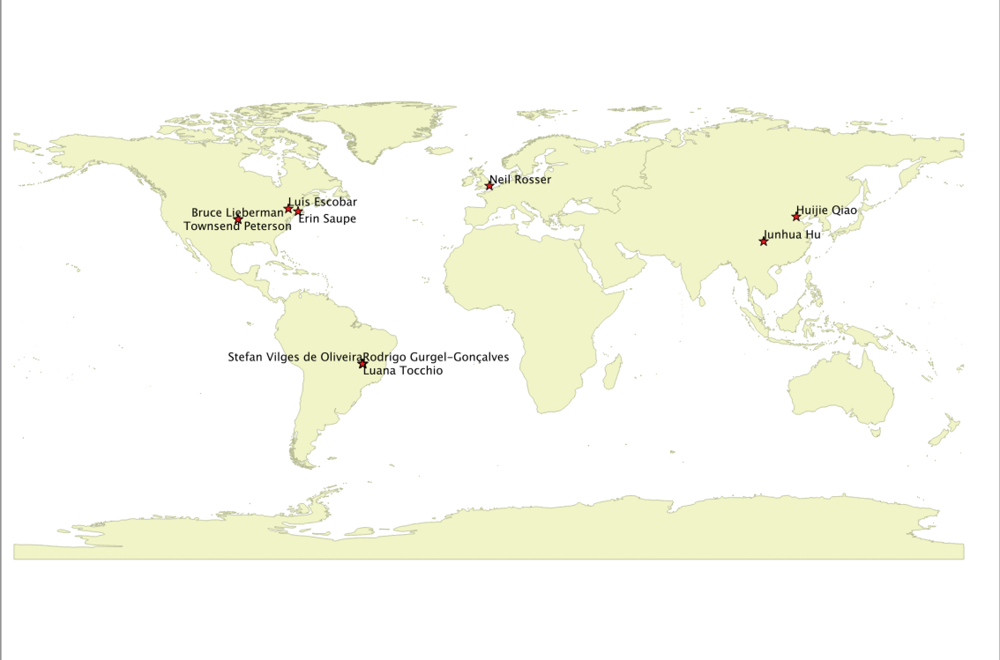

All publications citing NicheA
In this page, we collected the publications which used NicheA as a part of the analysis process. If your publications are not be included,
please send a message to
Huijie Qiao. Thank you very much!
Figure 1. So far NicheA has been cited by 9 papers, from 7 institutes in 4 countries.
We collected the number of countries and institutes from the first and corresponding authors of the papers.

Publications in 2015 (Sort by authors)
Qiao, H., et al. (2015). NicheA: Creating Virtual Species and Ecological Niches in Multivariate Environmental Scenarios. Ecography. 10.1111/ecog.01961.
Escobar L. E., et al. (2015). A global map of suitability for coastal Vibrio cholerae under current
and future climate conditions. Acta Tropica. 149: 202–211.
Escobar L. E., et al. (2015). First Report on Bat Mortalities on Wind Farms in Chile. Gayana. 79(1): 11-17.
Hu, J., et al. (2015). Niche divergence accelerates the evolution in Asian endemic Procapra gazelles. Scientific Reports. 5: 10069.
Myers, C. E., et al. (2015). PaleoENM: applying ecological niche modeling to the fossil record. Paleobiology. 41(02): 226-244.
Qiao, H., et al. (2015). No Silver Bullets in Correlative Ecological Niche Modeling: Insights from Testing Among Many
Potential Algorithms for Niche Estimation. Methods in Ecology and Evolution: 6(10): 1126-1136.
Rosser N, et al. (2015). Extensive range overlap between heliconiine sister species: evidence for sympatric speciation in butterflies?
BMC Evolutionary Biology: 15(1): 125.
Saupe, E. E., et al. (2015). Niche breath and geographic range size as determinates of species survival on geological
time scales. Global Ecology and Biogeography: 24(10): 1159-1169.
Publications in 2014
Escobar L. E., et al. (2014) Potential for Spread of White-nose Fungus (Pseudogymnoascus destructans) in the Americas: Using Maxent and NicheA to assure strict model transference.
Geospatial health 11: 221–229.
Tocchio L. J., et al. (2014) Niche similarities among white-eared opossums (Mammalia, Didelphidae): Is ecological niche modelling relevant to setting species limits?
Zoologica Scripta. doi:10.1111/zsc.12082.
Publications in 2013
Oliveira, S. V. d., et al. (2013). Potential Geographic Distribution of Hantavirus Reservoirs in Brazil. PloS ONE 8(12): e85137.